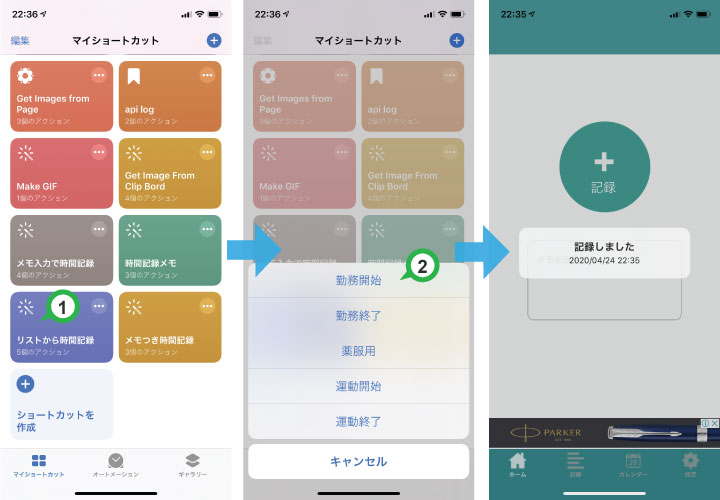

自分でよく記録するものをリストにまとめておき、記録するときはそこから選んで記録できます。
毎回メモを記述する必要がなくなります。
設定 > ショートカット の「共有セキュリティ」で「信頼されていないショートカットを許可」をオン(緑)にします。
※ この項目が表示されない iOS ではこの手順は不要です。そのまま次へ進んでください。
下のボタンからショートカットを入手します。
ここからショートカットを入手(２回タップ)「ショートカット」アプリから「リストから時間記録」のショートカットを探し、編集から記録するリストを自分用に書き換えてください。
最初にショートカットを実行すると「時間記録へのアクセスを求めています」と表示されるので「OK」をタップします。